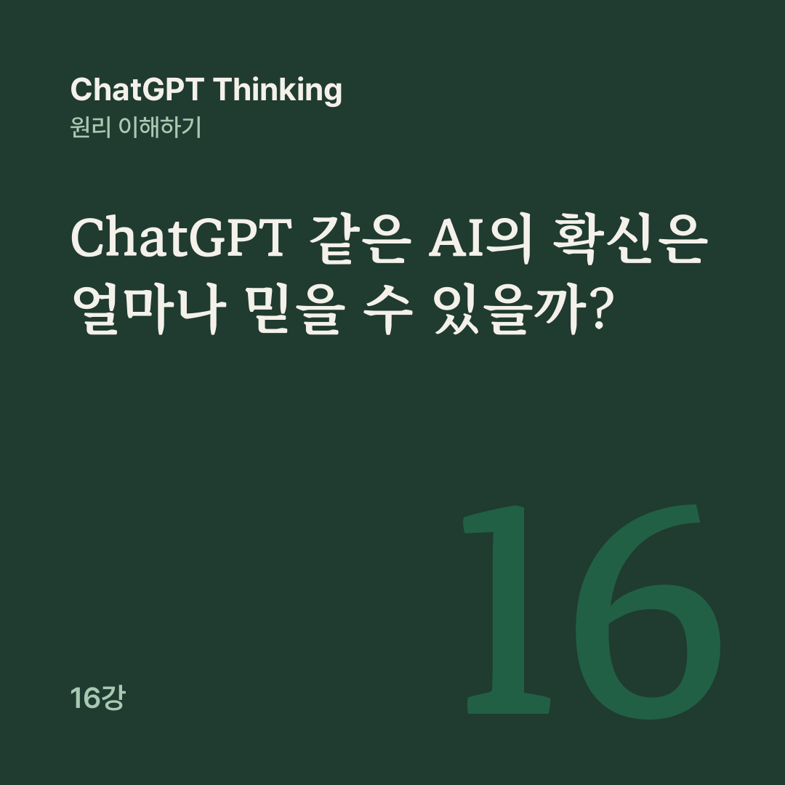

AI 원리 노트 · ChatGPT Thinking 16강
정말 신뢰할 만한 판단은 자신감이 큰 판단이 아니라, 얼마나 믿어야 하는지 검증할 수 있고 틀렸을 때 수정할 수 있는 판단이다.
AI가 ‘이 답이 맞을 확률은 90%입니다’라고 말한다면, 정말 열 번 중 아홉 번은 맞을까요? AI가 자신 있게 말하면 왜 나까지 그 답을 믿고 싶어지는지, 여러 AI가 모두 동의하면 정답이라고 봐도 되는지도 묻게 됩니다.
15강에서 배운 확률적 사고와 가설 검증, 반증을 바탕으로, 16강은 캘리브레이션, 인지 편향, AI 과신과 집단사고로 이 질문들을 연결합니다.
이 답이 맞을 확률은 80%입니다.
어떤 AI가 문제 100개를 풀면서 모든 답에 이렇게 말했고, 실제로 그중 80개가 맞았다고 해 봅시다. 이 AI는 해당 문제들에서 확신 수준과 실제 정답 비율이 잘 일치했고, 이런 상태를 캘리브레이션, 곧 확률 보정 상태라고 합니다.
80%라고 예측한 100개 중 50개만 맞았다면 과신(Overconfidence)이고, 60%라고 예측했는데 실제로 90%를 맞혔다면 그 구간에서는 과소확신(Underconfidence) 상태일 수 있습니다.
캘리브레이션은 한 번의 정답이나 오답만으로 평가하기 어렵습니다. 같은 수준의 확률을 제시한 사례를 충분히 모아 실제 결과와 비교해야 합니다.
정확도와 캘리브레이션은 서로 다릅니다. 정확도는 얼마나 자주 맞혔는지를, 캘리브레이션은 말한 확률만큼 실제로 맞혔는지를 묻습니다.
A가 80% 확률을 제시하고 80%를 맞혔고, B가 99% 확률을 제시하고 90%를 맞혔다면, B의 정확도는 더 높지만 확률 표현은 A가 더 잘 보정되어 있을 수 있습니다.
모든 문제에 50%를 예측하고 실제로 절반만 맞히는 AI도 특정 조건에서는 잘 보정되어 있을 수 있지만, 중요한 일을 맡기기에는 성능이 부족할 수 있습니다.
그래서 실제 평가에서는 정확도와 캘리브레이션에 더해, 맞힐 가능성이 높은 문제와 낮은 문제를 구별하는 능력과 심각한 오류까지 함께 살펴봐야 합니다.
가상의 AI가 질문 10개에 모두 ‘정답일 확률 90%’라고 답했는데, 실제로는 6개만 맞혔습니다. 예측한 정답 비율은 90%, 실제 관측 비율은 60%로 30%포인트 차이가 납니다.
이 표본에서는 AI가 실제 정답 비율보다 높게 확신을 표현한 것입니다. 다만 10개는 매우 작은 표본이어서, 이 차이만으로 AI가 지속적으로 과신한다고 단정할 수는 없고 충분한 독립 평가가 필요합니다.
‘90%라고 말했다’는 사실과 ‘실제로 90% 맞힌다’는 사실은 다릅니다. ChatGPT가 대화 중에 제시하는 ‘90% 확신’ 같은 숫자도 별도로 검증된 확률 보정 모델에서 나온 값이라고 보장할 수 없습니다.
언어 모델의 자신감 표현과 실제 정확도는 모델, 질문 종류, 측정 방식에 따라 달라지고, 2025년 연구들도 언어로 표현한 불확실성이 실제 오류 가능성과 일치하지 않을 수 있다고 보고했습니다.
중요한 판단이라면 AI에게 자신감이 몇 퍼센트인지 묻기보다, 비슷한 문제에서 실제로 얼마나 정확했는지 기록하고 확인해야 합니다.
11~12강에서 만든 고객 문의 분석 AI가 문의를 분류하면서 정답일 확률도 함께 제시한다면, 운영자는 그 예측을 여러 확률 구간으로 나눈 뒤 사람이 정답을 확인한 자료와 비교할 수 있습니다.
가상 시험에서 90% 확신 구간의 실제 정답 비율이 60%로 나왔다면, 그 구간에서 AI의 확신을 그대로 의사결정에 쓰면 위험할 수 있습니다.
12강에서 본 데이터 드리프트도 고려해야 합니다. 고객 문의 유형이 달라지거나 모델 버전이 바뀌면 이전에 측정한 보정 상태가 유지된다고 가정해서는 안 됩니다.
AI의 확신이 과장될 수 있는데도 사람은 왜 AI의 단정적인 설명을 쉽게 믿을까요? 여기에는 인지 편향이 관여할 수 있습니다. 인지 편향은 정보를 판단할 때 사고가 특정 방향으로 기울어지는 경향이고, 누구나 그 영향을 받을 수 있습니다.
그중 확증 편향은 자신의 기존 생각을 지지하는 정보는 더 쉽게 받아들이고, 반대되는 정보는 무시하거나 적게 찾는 경향입니다.
온라인 쇼핑몰 운영자가 이미 이렇게 생각하고 있다고 해 봅시다.
우리 고객들은 배송비가 비싸서 구매를 포기하는 것 같아.
그러자 AI가 ‘무료 배송 정책을 도입하면 매출이 증가할 것입니다’라고 말합니다. 이때 무료 배송을 좋아한다는 고객 후기만 찾아보면 실제 구매 포기 원인이 가격인지, 상품 품질인지, 배송 시간인지 놓칠 수 있습니다.
AI에게도 이 가설을 지지하는 증거와 반박하는 증거를 모두 찾고, 다른 가능한 원인을 최소 세 가지 비교하고, 현재 자료만으로 판단할 수 없는 부분도 알려 달라고 요청할 수 있습니다. 좋은 검증은 내가 틀릴 수 있는 이유까지 찾아내는 과정입니다.
다음 달 매출은 30% 증가할 가능성이 높습니다.
AI가 이렇게 설명한 뒤 다른 자료를 검토해 보니 실제 예상 증가율은 5~10%에 가까워 보입니다. 그런데도 처음 본 30%라는 숫자가 머릿속에 남아 판단에 영향을 줄 수 있습니다. 이처럼 먼저 본 숫자나 설명이 이후 판단의 기준점이 되는 경향을 앵커링이라고 합니다.
AI가 상세한 이유를 덧붙여 설명하면 더 신뢰하고 싶어질 수도 있습니다. 2025년에 발표된 한 연구에서는 언어 모델의 설명이 길어질수록 사용자의 확신이 높아지는 현상이 관찰되었지만, 설명이 길어진 만큼 답변의 정확도가 개선되지는 않았습니다.
Microsoft Research의 2025년 설문 연구(지식 근로자 319명 대상)에서는 생성형 AI에 대한 신뢰가 높을수록 비판적 사고에 들이는 노력이 적다고 보고하는 경향이 나타났습니다.
다만 이는 설문에서 관찰된 관련성이고, AI 신뢰가 사고력 저하를 직접 일으킨다는 인과관계의 증명은 아닙니다.
이런 편향을 줄이려면 AI의 답을 보기 전에 내가 예상하는 범위와 근거를 먼저 적어 두면 도움이 됩니다. 답을 본 뒤에는 AI가 사용한 전제와 자료를 확인하고, AI의 첫 숫자는 그대로 기준으로 삼지 않고 하나의 추가 증거로 평가합니다.
9강에서 본 멀티 에이전트 시스템처럼 조사, 분석, 검증을 나눠 맡은 AI들이 모두 같은 답을 한다면 정답에 가까워지지 않을까요? 반드시 그렇지는 않습니다. 가상 쇼핑몰에서 무료 배송 기준을 확인하자 조사 AI가 이렇게 답합니다.
3만 원 이상 구매 시 무료 배송입니다.
분석 AI는 조사 결과에 동의하고, 검증 AI도 다른 두 AI와 결론이 일치한다고 답합니다. 그런데 세 AI는 모두 같은 오래된 블로그 글을 참고했고, 현재의 공식 배송 정책 문서에는 무료 배송 기준이 5만 원이라고 적혀 있습니다.
세 AI의 일치는 독립적인 증거 세 개와 같지 않습니다. 같은 자료에서 시작한 오류를 반복했을 가능성이 있습니다.
여러 AI가 같은 말을 해도, 그 주장을 뒷받침하는 증거가 서로 독립적인지 확인해야 합니다. 2025년에 발표된 멀티 에이전트 연구에서도 AI 에이전트들이 토론 과정에서 다수 의견에 동조하는 현상이 관찰되었습니다.
이런 동조를 줄이려면 AI들이 서로의 결론을 보기 전에 각자 판단하게 하고, 그다음에 주장과 근거를 비교하면서 다수 의견에 반대하는 소수 의견도 검토하는 방법이 도움이 됩니다. 다만 역할을 나누거나 반대 의견을 만들었다는 사실만으로 검증이 끝나지는 않습니다.
좋은 판단은 스스로를 수정할 수 있습니다.
새로운 증거와 실제 결과에 따라 판단과 확신을 갱신한다는 뜻입니다. 판단 당시의 확률과 실제 결과를 기록해 두면 다음 예측과 의사결정을 개선할 수 있습니다. AI에 대한 신뢰도 마찬가지입니다. 신뢰할 근거를 만들고, 그 근거가 달라지면 신뢰 수준도 조정합니다.
AI와 인간이 중요한 결정을 내릴 때 발생하는 오류를 사전에 찾아낼 수는 없을까요? 다음 강의인 17강은 프리모텀과 레드팀을 다룹니다.
다음 글 · 17강 ChatGPT 같은 AI 시스템의 실패를 미리 찾아내는 프리모텀과 레드팀
이전 글 · 15강 ChatGPT 시대의 증거 기반 판단과 불확실성 다루기
공개 대화의 16강을 블로그용으로 다시 편집했습니다. 원문 강의가 참고한 글은 아래 다섯 편입니다.
